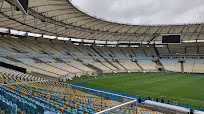
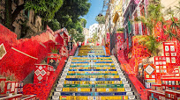
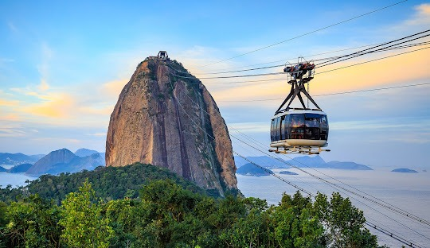

Pontos Turísticos
Cristo Redentor:

Cristo Redentor é uma estátua art déco que retrata Jesus Cristo,
localizada no topo do morro do Corcovado, a 709 metros acima do nível do mar,
com vista para parte considerável da cidade brasileira do Rio de Janeiro.
Museu do Amanhã:

O Museu do Amanhã é um museu construído no município do Rio de Janeiro, no Brasil.
O prédio, projeto do arquiteto espanhol Santiago Calatrava,
foi erguido ao lado da Praça Mauá, na zona portuária. Sua construção teve o apoio da
Fundação Roberto Marinho e teve o custo total de cerca de 230 milhões de reais.
Maracanã:

Estádio Jornalista Mário Filho, mais conhecido como Maracanã, ou carinhosamente como Maraca,
é um estádio de futebol localizado no bairro de mesmo nome, na Zona Norte da cidade brasileira do Rio de Janeiro.
Escadaria Selarón:

A Escadaria Selarón é uma obra arquitetônica localizada entre os bairros de Santa Teresa e Lapa,
no Rio de Janeiro, Brasil, decorada pelo artista chileno radicado no Brasil de longa data,
Jorge Selarón, que declarou-a como uma "homenagem ao povo brasileiro".
Praia de Copacabana

A Praia de Copacabana é uma praia localizada no bairro de Copacabana,
na Zona Sul da cidade do Rio de Janeiro, no Brasil.
É considerada uma das praias mais famosas do mundo.
Praia de Ipanema

Praia com faixa de areia extensa frequentada para banhos de sol
e para a prática de futebol e vôlei.
Pão de Açucar

Monumento Natural dos Morros do Pão de Açúcar e da Urca é um complexo de morros localizado no bairro da Urca,
na cidade do Rio de Janeiro, no Brasil. É composto pelo Morro do Pão de Açúcar e pelo Morro da Urca.